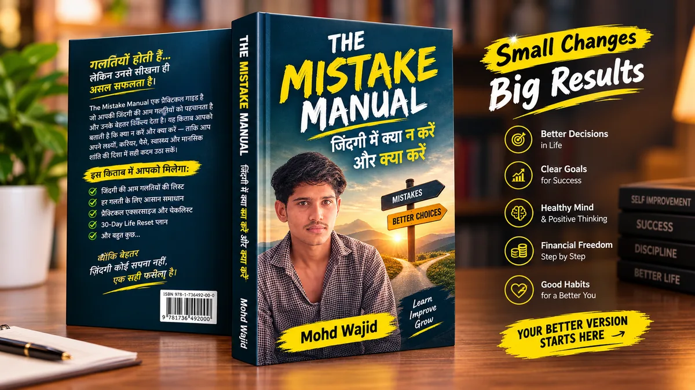

- 23 Chapters
- 30-Day Life Reset
- 37-Point Mistake Checklist
- 90-Day Worksheet
Success के लिए सिर्फ़ यह जानना काफ़ी नहीं कि क्या करना है। यह भी जानिए कि क्या करना बंद करना है।
The Mistake Manual एक practical self-improvement eBook है, उनके लिए जो overthink करते हैं, बार-बार टालते हैं या बिना direction के मेहनत कर रहे हैं। इसमें common life mistakes हैं, और हर एक की जगह लेने वाला एक छोटा, करने लायक action।
Digital eBook (PDF) • Payment के बाद download page • ₹PRICE_HERE

Perfect time का इंतज़ारछोटा actionहर चीज़ एक साथएक priorityदूसरों से comparisonअपनी progress

शायद Problem आपकी मेहनत नहीं, आपका तरीका है।
हम नए goals, नई habits और नया motivation जोड़ते रहते हैं, पर जो आदतें हमें रोक रही हैं, उन्हें देखते ही नहीं। किताब इन 10 जगहों पर रुककर देखती है:
Overthinking
बहुत सोचते हैं, action कम लेते हैं।
सब कुछ एक साथ
बहुत सारे goals, कोई पूरा नहीं।
Distractions
Scrolling और notifications में समय गुम।
Motivation पर निर्भरता
जोश गया तो आदत भी गई।
Failure का डर
"लोग क्या कहेंगे" में शुरुआत रुक जाती है।
Comparison
दूसरों की झलक से अपनी life तौलना।
Shortcuts
"रातों-रात" वाले वादों के पीछे भागना।
Money mistakes
बिना हिसाब का खर्च, बिना ज़रूरत की EMI।
Health ignore करना
नींद, energy और छोटी bad habits।
Decision में अटकना
या तो बहुत टालना, या जल्दबाज़ी।
यह किताब अलग क्यों है?
किताब खुद साफ़ कहती है: सफलता सिर्फ़ मेहनत से नहीं मिलती। हालात, मौके और किस्मत भी मायने रखते हैं। इसलिए यहाँ कोई बड़ा वादा नहीं है।
यह नहीं है
- 100% success की guarantee
- कोई magic formula
- Overnight success का वादा
- सिर्फ़ motivational speech
यह है
- Practical और honest
- हर chapter में Action Step
- Reflection questions और worksheets
- आपकी chances बेहतर करने वाले छोटे कदम
अंदर क्या है?
7 Parts, 23 Chapters। हर chapter में: गलती क्या है, हम क्यों करते हैं, इसका नुकसान, एक काल्पनिक उदाहरण, बेहतर तरीका, Action Step और Reflection।
Part 1: वो गलतियाँ जो हमें दिखती नहीं
- क्या हम सही दिशा में जा रहे हैं?
- Overthinking
- हर चीज़ एक साथ करने की गलती
Part 2: Life की बड़ी गलतियाँ
- Distractions
- Motivation ≠ Discipline
- Failure से बचना, सबकी approval चाहना
Part 3: Career & Success
- Degree के साथ Skill
- बार-बार direction बदलना
- Shortcuts और Comparison
Part 4: Money
- पैसे की सबसे आम गलतियाँ
- जल्दी अमीर बनने का भ्रम
- सिर्फ़ खर्च घटाना नहीं, कमाई की क्षमता भी
Part 5: Habits, Health & Mindset
- Sleep और Energy
- छोटी bad habits
- खुद से बात करने का तरीका
Part 6: क्या करें
- सही Goal कैसे चुनें
- Daily 3 Focus System
- Decision-Making Framework
Part 7: 30-Day Life Reset
- 30 दिन, रोज़ एक task
- हर दिन एक reflection question
इस किताब से आपको क्या मिलेगा?
अपनी current direction को परखने का तरीका (Life Audit)
Overthinking से action की तरफ़ जाने के छोटे steps
Multiple goals सँभालने का framework
Distractions कम करने के practical तरीके
Motivation की जगह systems बनाने की समझ
Failure से सीखने का 5-सवाल वाला framework
Skill और career पर practical सोच
Money mistakes पहचानने की समझ और red flags की list
किताब के practical frameworks
सिर्फ़ theory नहीं। हर framework को उसी दिन इस्तेमाल किया जा सकता है। (पूरी detail किताब में।)
Life Audit
समय, पैसा, energy और attention का ईमानदार हिसाब। शुरुआत यहीं से।
5-Minute Action Rule
टालमटोल तोड़ने के लिए बस 5 मिनट की शुरुआत।
One Goal at a Time
बिखरे goals से एक Main Goal तक।
Distraction Detox
Notifications, friction और focus blocks के 6 कदम।
Daily Discipline System
Motivation नहीं, anchor + minimum version + tracker।
Failure Review
हार के बाद 5 सवाल, ताकि सीख मिले, शर्म नहीं।
90-Day Experiment
Trend के पीछे भागने की जगह तय समय का प्रयोग।
6-Question Goal Framework
क्या, क्यों, कब, कैसे, क्या छोड़ूँगा, कैसे नापूँगा।
Daily 3 System
रोज़ सिर्फ़ 3 ज़रूरी काम: Main, Support, Care।
Learn → Practice → Feedback → Improve
सीखने को असली नतीजों में बदलने का चक्र।
7-Step Decision Framework
फ़ैसले को साफ़ करने के 7 सवाल।
Personal Progress Scorecard
दूसरों से नहीं, अपने पिछले महीने से तुलना।
30-Day Life Reset: पढ़ें, और फिर करें
किताब पढ़कर भूल जाने की जगह, 30 दिन का practical सिलसिला। हर दिन में objective, छोटा task और एक reflection question है।
Week 1: Awareness
Life Audit, समय का हिसाब, distraction map, Main Goal चुनना।
Week 2: Systems
Daily 3, नींद, 5-minute rule, काम की जगह, पैसों की जाँच।
Week 3: Skill & Action
Learn, practice, feedback, improve। साथ में self-talk और Failure Review।
Week 4: Confidence & आगे
"ना" की practice, माहौल, comparison, action day और 90-day plan।
Checklist और Worksheets: सिर्फ़ जानकारी नहीं
Mistake Checklist
"क्या मैं ये गलतियाँ कर रहा हूँ?" 37 बिंदु, जिनसे पता चले कि पहले किस हिस्से पर काम करना है।
क्या न करें / क्या करें
25 सीधी तुलनाओं की summary table, जिसे बार-बार देखा जा सके।
My Next 90 Days
Main goal, क्यों ज़रूरी, ज़रूरी skills, बनानी और घटानी habits, क्या रोकूँगा, क्या शुरू करूँगा, weekly review और 90-day target।
Weekly Review Template
हर हफ़्ते 20 मिनट: जीत, गलती, सीख और अगला बदलाव।
यह किताब किसके लिए है?
यह आपके लिए है, अगर
- आप खुद को stuck महसूस करते हैं
- आप overthink करते हैं
- शुरू करते हैं, पर consistent नहीं रह पाते
- आपके पास बहुत सारे goals हैं
- Distractions में समय जाता है
- आप career, skills और money habits सुधारना चाहते हैं
- आप एक practical reset चाहते हैं
यह शायद आपके लिए नहीं है, अगर
- आपको overnight success चाहिए
- आपको guaranteed पैसा चाहिए
- आप कोई magic formula ढूँढ रहे हैं
- आप कोई action लेना ही नहीं चाहते
लेखक
Mohd Wajid, The Mistake Manual के लेखक। किताब में आम ज़िंदगी की गलतियों और उनके practical विकल्पों को सरल Hindi/Hinglish में समझाया गया है।
किताब की एक झलक
अक्सर पूछे जाने वाले सवाल
यह eBook किसके लिए है?
Students, young adults, beginners और उन सबके लिए जो stuck महसूस करते हैं, overthink करते हैं या consistency से जूझते हैं।
क्या यह beginners के लिए है?
हाँ। भाषा सरल Hindi/Hinglish है, और हर chapter एक छोटे Action Step पर खत्म होता है।
क्या यह सिर्फ़ motivational book है?
नहीं। इसमें frameworks, exercises, checklist और worksheets हैं। किताब कोई success guarantee नहीं देती।
eBook में क्या-क्या मिलेगा?
23 chapters, 30-Day Life Reset, Mistake Checklist, क्या न करें/क्या करें summary, My Next 90 Days worksheet, FAQ और References।
क्या इसमें exercises हैं?
हाँ। हर chapter में Action Step और Reflection questions हैं।
30-Day Life Reset क्या है?
30 दिन का practical sequence: रोज़ एक objective, task और reflection question। Awareness से शुरू होकर future planning तक।
मुझे eBook कैसे मिलेगी?
यह एक digital PDF eBook है। Payment के बाद आपको download page पर भेजा जाएगा।
Payment के बाद क्या होगा?
Payment सफल होने पर आप Thank You page पर पहुँचेंगे, जहाँ download button मिलेगा। कोई दिक्कत हो तो उसी पेज पर support email दिया है।
अब सिर्फ़ पढ़ना नहीं, एक छोटा Action लेना शुरू करें।
Life Audit से 30-Day Reset तक, और अंत में अपना My Next 90 Days plan। एक किताब, जो आपसे करवाती भी है।
The Mistake Manual — Digital eBook
Digital eBook • Payment के बाद download page